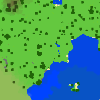
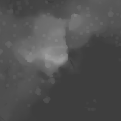

The color map.
And the depth map, pulled straight from a Minecraft world.
The direct shadows are done by casting a ray from every pixel in the sun direction, and at every small step checking if the ray is underneath the terrain (blocked from the sun) by testing its position against the depth map.
The overall lighting effect is done by converting the depth map into a normal map, then illumination is proportional to the dot product between the normal and the unit vector pointing to the sun.